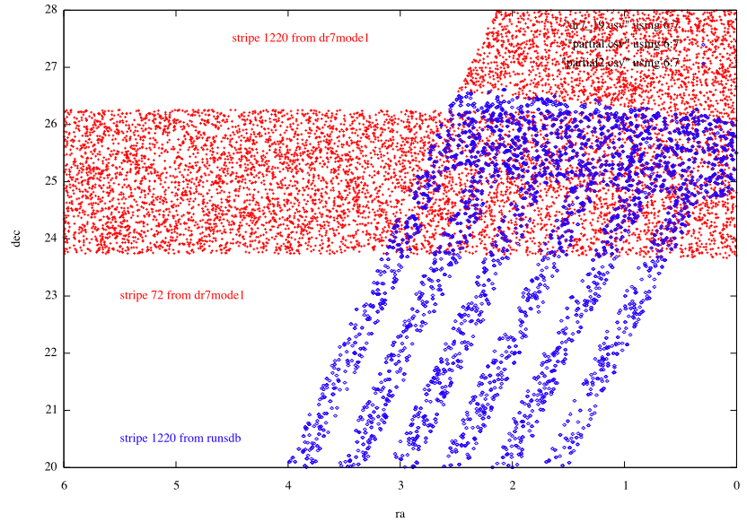

Select p.run,p.rerun,p.camcol,p.field,p.obj,p.ra,p.dec,g,mode,p.status,stripe,strip
From Photoobjall p,field f,segment s
Where
Ra between 6 and 0 and
Dec between 20 and 28 and
G between 18 and 18.2 and
p.fieldid = f.fieldid and f.segmentid = s.segmentid
(and mode=1 for the context dr7)
($11 == 1220) && ($4 > 295 || ($4 > 118 && $4 < 190 ))
The South strip of Stripe 1220 from the runsdb consists of objects from run 4135.
The North strip of Stripe 1220 from the runsdb consists of objects from run 4152.